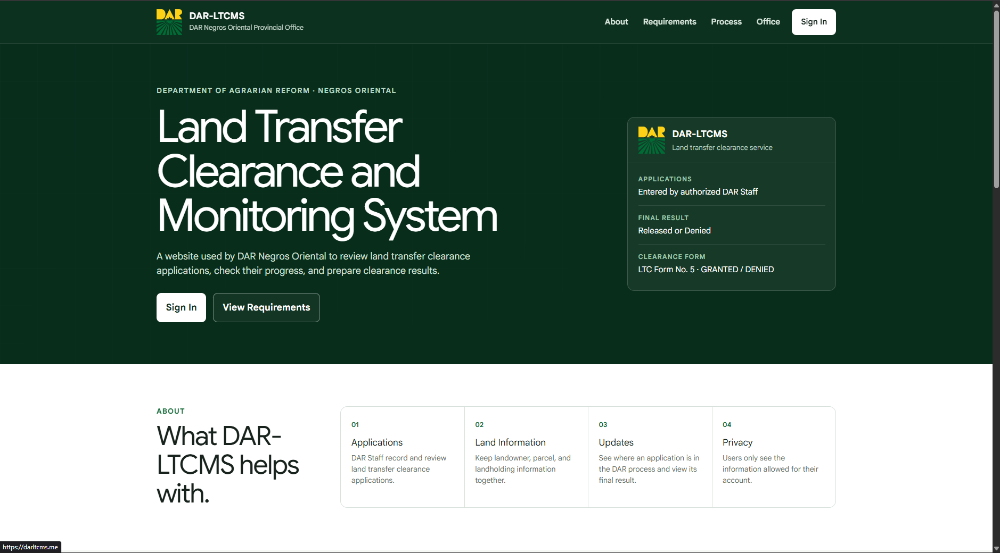

Land transfer clearance and monitoring for the Department of Agrarian Reform in Negros Oriental.
I lead integration across the interface, application workflows, parcel records, and supporting data. The system brings clearance processing, mapping, and reporting into one place.
- Contribution
- Lead / Integrator
- Built with
- Laravel, PHP, PostgreSQL, Blade